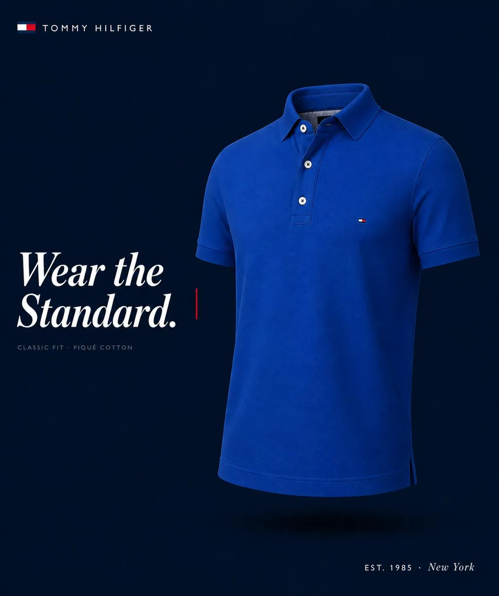

01 / 04
Tommy Hilfiger
"Wear the
Standard."
The Strategic Decision
Tommy doesn't sell clothes. It sells belonging to a certain standard. The decision was never to sell the polo itself — but to confirm that wearing it was the right choice all along. "Wear the Standard" isn't a command. It's a validation of something the customer already believes about themselves.
Why the Visual Works
The product floats with no body — intentional. When there's no person, the viewer places themselves inside the polo automatically. The navy background isn't just a color choice, it's Tommy's DNA: classic American confidence. The small red line next to the headline isn't decoration — it's the Tommy flag reduced to a single stroke.